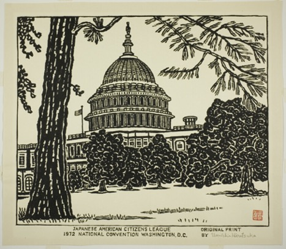
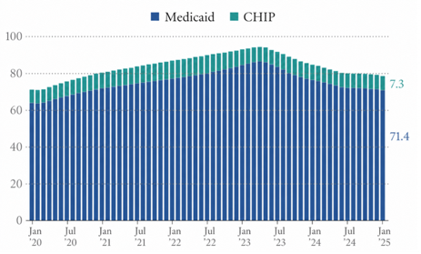
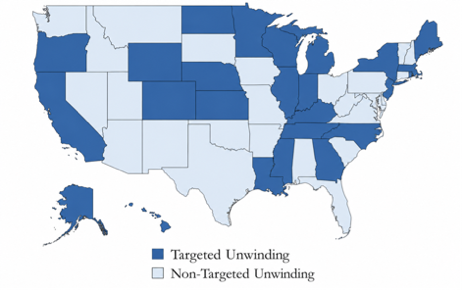
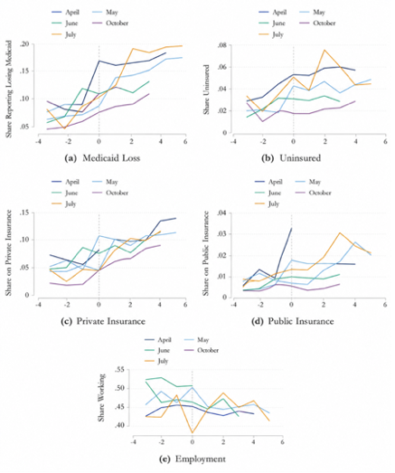

Jacob Lawrence, American
Free Clinic (1937)
Jacob Lawrence, American
Free Clinic (1937)
The interactive below focuses on the welfare effects of halting guaranteed Medicaid coverage. More specifically, did the "Great Unwinding" reduce the labor supply, thereby affecting household finances and increasing the likelihood of delaying medical treatment?
by MICHAEL V. OCHOA
Working Paper (2026)As communities across the nation hunkered down, the Families First Coronavirus Response Act was passed. The federal government offered states additional funding in exchange for guaranteeing that anyone eligible for Medicaid from March 2020 to April 2023 was eligible indefinitely. This gave vulnerable populations a reprieve, sparing them the daunting challenge of annual verification.
As layoffs from the lockdowns increased, the number of Americans cligible for Medicaid enrollment ballooned. By early 2023, enrollment swelled to 94.1 million people or roughly 1 in 4 Americans (Kaiser Family Foundation, 2026). By halting eligibility checks, Congress created a European-style safety net that ensured uninterrupted access to health care for millions. This drove the national uninsured rate to an all-time low of 8.0% among US residents (ASPE, 2022).
Congress then removed the net. This was by design: the policy was in response to a public health emergency and was intended to be phased out as the economy reopened. Beginning April 1, 2023, states were required to require people to renew their Medicaid eligibility regularly. This reversal became known as the “Great Unwinding” (Gusmano and Thompson, 2025).
The lion’s share of people who lost coverage, approximately 69%, did so for procedural reasons (e.g., missing paperwork, missing a deadline)(AJMC, 2024). Those losses were not uniform. They reflected differences in how states conducted eligibility checks. Some are confirmed eligible automatically using data sources, requiring no action on the enrollee’s part (i.e., Targeted Unwinding). Those who employed this effective administrative tool had lower disenrollment rates, while others added to the public’s burden, requiring eligible individuals to jump through bureaucratic hoops and driving up the rate of health care coverage loss (i.e., Non-Targeted Unwinding).
These state-by-state differences affected the number of qualified people who remained covered, driving considerable heterogeneity (McIntyre et al., 2023).
My work focuses on the welfare effects of halting guaranteed Medicaid coverage. More specifically, did the "Great Unwinding" reduce the labor supply, thereby affecting household finances and increasing the likelihood of delaying medical treatment?
For my analysis, I use the Household Pulse Survey. It follows whether a person was disenrolled from Medicaid and the type of health insurance they had. I start with an instrumental-variable difference-in-differences (IV-DID) model that leverages differences in how states conducted eligibility checks. To mold my instrument and remove undesirable variation, I seize on a state’s administrative capacity in health care, which is purged of political-economic forces. Using this is-as-good-as-random instrument, I find that the “Great Unwinding” raised uninsurance rates by 34 pp and private insurance rates by 56 pp.
The second model capitalizes on the fact that some states began disenrollments earlier than others. The staggered-DID model corroborates the results above.
My final model (staggered-IV) uses an opportune setting in which state-by-state treatment diverges in both intensity and timing, mimicking a randomized experiment. It differs from the second model in that it scales treatment for a given disenrolled person. Whereas the second model generates estimates for both the disenrolled and enrolled populations. This model produces different results: a given disenrolled person is 63 pp more likely to delay medical treatment.
These findings expose a range of policy implications. For example, as individuals are unwound from Medicaid, they may switch to private insurance, which, depending on the plan, may limit the services it covers. This may force people to pay out of pocket for health expenses, increasing the likelihood of delaying medical treatment.
The “Great Unwinding” shows that state-by-state differences in how eligibility checks are conducted are likely to matter again. On January 1, 2027, individuals will need to prove their Medicaid eligibility every 2 years. While the rules come from the Capitol, an individual’s Medicaid coverage will depend on the volume of paperwork, the effectiveness of administrative tools, and the staffing each state provides. Altogether, it suggests that future Medicaid coverage will once again be shaped by state-by-state differences in administrative capacity.

Medicaid and CHIP provide health care to millions of low-income individuals, pregnant women, and children. Before the lockdowns, Medicaid and CHIP insured approximately 71 million Americans. To remain covered, people would regularly renew their eligibility, and states would disenroll those who were ineligible or failed to complete the required paperwork.
During the pandemic, these disenrollments were halted. Under a provision in the 2020 relief package passed by Congress, the federal government offered states additional funding in exchange for guaranteeing Medicaid coverage for recipients, known as continuous enrollment. During those years, monthly enrollment in Medicaid and CHIP swelled by 25%, though it began to reverse in April 2023, when continuous enrollment ended, as shown in the figure below (in millions).

While ending this program was by design, it left millions of eligible Americans without Medicaid. Up to 69% of those who lost healthcare coverage did so for procedural reasons.
Reasons people become ineligible for Medicaid include moving, dying, changing phone numbers, or simply earning too much. Such an assortment makes it difficult to identify eligible Medicaid recipients. Adding to the confusion, each state has its own re-enrollment strategies (Kaiser Family Foundation, 2023). This means some states leveraged existing government databases to automatically verify eligibility, sparing their publics the challenge of verification. While other states added to the public burden, requiring the eligible to jump through bureaucratic hoops to remain enrolled (e.g., submitting documents).
I exploit this state-by-state variation in my analysis. Another source of variation I leverage is that, although continuous enrollment ended on April 1st, 2023, some states did not begin disenrollment until later. Varying by state, this staggered removal of people from Medicaid further strengthens my identification strategy.
The literature on vulnerable populations gaining health care coverage is extensive. Past research has examined the effects of the 2014 Affordable Care Act on health outcomes (Sommers et al., 2016).
On the other hand, literature on health coverage loss is scarce. This gap means that past literature may not be extendable to the “Great Unwinding” of 2023.
Previous literature on loss has focused on individuals’ sudden disenrollment from Tennessee’s coverage in 2005. Up to 170,000 adults, many without children, suddenly lost their TennCare coverage. Comparing outcomes in neighboring states with those in Tennessee, the research examines the effects of TennCare loss on coverage rates, social determinants of health, and related outcomes. Solomon and Konstantinos (2019) note that Tennessee’s uninsured rate rose by 5 percentage points. Health scholars have also investigated the effects of sudden TennCare disenrollment on emergency room visits (Tello Trillo et al., 2015).
Examining whether disenrollment affects private insurance rates honors a long-studied empirical question. That is, does expanding public insurance crowd out private insurance (Cutler and Gruber, 1996)?
They find that during the 1987-1992 period, Medicaid eligibility for children and pregnant women swelled, leading to a decline in private insurance coverage. I contend that the drop in private insurance among the TennCare population would be lower, as those who were suddenly dropped had little incentive to enroll in private coverage because they lacked children and were thus more risk tolerant.
Solomon and Konstantinos (2019) also find that TennCare loss had little effect on employment. On the other hand, the results of Garthwaite et al. (2014) suggest that adults work just enough to secure private health care coverage (i.e., the "employment lock").
Nonetheless, the literature on loss remains largely inapplicable to the "Great Unwinding". First, people disenrolled post-pandemic were likely to have higher incomes than the average Medicaid enrollec, enabling them to purchase private insurance. Second, past disenrollments focused on adults without children, whereas the 2023 unwinding was widespread.
Medicaid unwinding has a push-pull effect on labor supply. For instance, if an enrollee earns a dollar more than the poverty threshold, they lose their Medicaid benefits. To retain coverage, an enrollee may scale back their hours of work, but this hatches a troubling income-coverage trade-off.
Ultimately, this internal bargaining reflects a worker’s desires. The theory suggests that, among those disenrolled, the labor supply will either rise or remain steady. Whereas among those who keep Medicaid, the labor supply will remain low to preserve eligibility.
I rely on administrative data from the Kaiser Family Foundation. It highlights how differently states removed people’s eligibility. More specifically, it distinguishes between Targeted and Non-Targeted Unwinding. The former is a state that flags individuals who are now likely ineligible for Medicaid due to lapsing continuous enrollment. It suggests a more sophisticated state capacity, as it must aggregate, merge, and sort enrollee characteristics to enact Targeted Unwinding. Whereas the latter requires the eligible to jump through bureaucratic hoops.
Using data from the Kaiser Family Foundation, the figure below shows the state-by-state differences.

Leveraging a partnership with the Census Bureau, data from the Household Pulse Survey (HPS) are used. This online survey provides a snapshot of conditions during this public health emergency. More specifically, it asks Americans how the pandemic impacted employment, health, household spending, and health insurance. The latter provides a rough estimate of the number of uninsured people nationwide during the pandemic. I also pool HPS data on household financial strain.
What’s more, as the economy reopened, the survey added questions on Medicaid Unwinding (i.e., whether the respondent had received Medicaid since January 2022, whether they had lost coverage since then, and, if so, the reason for the loss of health coverage).
Producing causal estimates of the "Great Unwinding" is a challenge. Past research on sudden health care loss has employed a difference-in-difference model. But because a never-treated group does not exist, this paper must advance previous efforts. To do so, it rolls out three models that leverage the disparate timing and intensity of unwinding to identify the causal effects of disenrollment.
Before delving into the three models, I examine which attributes most closely align with disenrollment. Using HPS data from April 2023 to October 2023, I compare individuals with Medicaid to those who lost it. I find the disenrolled have higher incomes and, to some extent, are more female and Hispanic. This income gap reflects states’ capacity to fruitfully disenroll those who earn too much. After running a fine-tooth comb through the characteristics of the disenrolled-by-coverage category, I discovered that those earning less than $25,000 and eligible for Medicaid were likely to have lost coverage due to procedural issues (e.g., changing phone numbers, moving).
Finally, I run an Ordinary Least Squares (OLS) model to estimate the effect of the "Great Unwinding" on a range of outcomes. Given my own experience losing health insurance, I used my "sociological imagination" to select variables from the HPS that reflect the effects of losing Medicaid. Measures include whether one worked in the last week, whether one delayed medical treatment, stress about price increases, difficulty paying for expenses, and increased use of credit/loans.
Next, I converted these variables into binary outcomes and merged them with the HPS controls: age, race, marital status, number of children/adults in the household, education, whether rent increased in the last month, and whether the individual received the COVID-19 vaccine. Additionally, state and month fixed effects are included.
The OLS regression suggests that losing Medicaid increases the likelihood of delaying medical treatment by roughly 6 pp, worrying about price increases by approximately 2 pp, having difficulty paying expenses by about 4 pp, and using credit/loans more often by almost 4 pp.
However, this regression has identification problems. The canonical problem of omitted-variable bias lurks, as do unobservable differences between the enrolled and disenrolled. What’s more, individuals may leave Medicaid of their own accord, which also biases estimates.
To iron out these wrinkles, an instrumental-variable difference-in-differences (IV-DID) regression is employed. As an instrument, I consider how states conducted eligibility checks during the "Great Unwinding". That is, did the state take a Targeted Unwinding or Non-Targeted Unwinding approach to renewing Medicaid?
My belief is that using state policy as an instrument helps me better distinguish those removed from Medicaid from those who left on their own accord. More importantly, it captures the importance of state differences in unwinding.
The first-stage DID assumes the following form:
MedicaidLossim =
α + λ(Targeted s(i) x Postm) + β1 Xim + ηs(i) + ζm + εim
where the outcome variable MedicaidLossit denotes whether person i lost Medicaid in month m. To indicate whether a person's state employs Targeted Unwinding, the binary variable Targeted-si is used. Post-m specifies if the event occurred before or after the "Great Unwinding". The coefficient of interest, λ. Xit is a vector of controls provided by the HPS dataset, and ηs(i) and ζm are the fixed effects.
Next, I build the reduced-form regression. It has a similar structure to the equation above, except that its outcome variable, insurance coverage (i.e., uninsured, private insurance, or public insurance), is on the LHS.
Yim =
α + λ(Targeted s(i) x Postm) + β1 Xim + ηs(i) + ζm + εim
For an instrumental variable to be valid, it requires relevance and exclusion restrictions to be recognized. History has shown countless instruments that appeared reliable but couldn't be counted on. For that reason, this paper approaches its IV with caution.
The first condition for a valid instrument is relevance. The map above of the United States shows that the share of people losing Medicaid varies by whether a state adopts a Targeted or Non-Targeted Unwinding approach, indicating that the instrument affects the treatment (i.e., relevance).
To ensure a valid instrument is not washed out, it must be randomly assigned. In this case, how a state conducted its eligibility checks during the “Great Unwinding” reflects its administrative capacity in healthcare, not political-economic forces. The instrument must also have no direct impact on the outcome. In this case, a state’s re-enrollment strategy has no effect beyond the outcomes my work focuses on.
The results of the first-stage regression show that Targeted Unwinding Post increases Medicaid Loss by roughly 4 pp, confirming its relevance. The point estimates from the IV-DID model indicate that Medicaid disenrollment is associated with increases in public insurance, private insurance, and uninsurance rates. This comes as no surprise, as it reflects the mechanical nature of removal. Altogether, losing Medicaid increases the likelihood of uninsurance by 34 pp and of being on private insurance by 56 pp. The latter estimate reflects people finding insurance elsewhere, whether through their employer or the marketplace.
My second model leverages variation in treatment timing, namely, whether states made moves on disenrollment at different points in time. This allows early treated states to be compared with later-treated states using a staggered difference-in-differences model. Estimates from this model reflect the entire Medicaid population in each state.
Altogether, this second model examines whether disenrollment affected insurance coverage, labor supply, and financial strain. Allowing treatment effects to vary by month gives this regression an event-study flavor. The staggered DID equation is as follows:
Yim =
α + Σ Βm x {EventTimeim = r} + β2 Xim + ηs(i) + ζm + εim
where the outcome variable Y is insurance coverage. The effect of unwinding in each month is the outcome of interest and is denoted by Bim, and r specifies the month relative to the treatment month. And, as in the previous model, X is a vector of controls, and η(i) and ζm represent state-and month-fixed effects, respectively. When conducting analysis, this model focuses on comparing those covered by Medicaid and those who report having lost Medicaid coverage.
Acknowledging that a staggered DID and its heterogeneous treatment effects may bias estimates, I incorporate methods from Callaway and Sant’Anna (2021). This allows me to use an alternative estimator to pool a weighted average of treatment effects to address this issue. In this case, a separate average treatment effect is computed for each cohort of states at the onset of their unwinding in each month.
Next, I include results from months prior to the “Great Unwinding” to gauge the pre-trends. The directional similarity in the figure below suggests that there are no differential pre-trends between states that began disenrollment at different times. This substantiates my identifying assumption of similar pre-trends.

The empirical results of the second model indicate Medicaid coverage loss and private insurance uptake. Estimates suggest a 5pp decline for the former and a 3pp increase for the latter. When it comes to labor supply, the staggered DID finds a 5pp increase in the probability of working in the last week. As explained in Section 4, this negative coefficient suggests that, to retain coverage, an enrollee may dial back their labor supply to reduce their income.
To improve upon my empirical strategy, I merge the two models. This ensures that state-by-state differences in when treatment begins, rather than setting a single date of disenrollment for all states (i.e. April 1, 2023). This staggered-IV mirrors the IV-DID in Equation 3, barring Postm is swapped for StartedUnwindingm. The final model assumes the following form:
MedicaidLossim = α + λ(Targeted s(i) x StartedUnwindingm) + β1 Xim + ηs(i) + ζm + εim
Results corroborate the story that private insurance rates have increased relative to uninsured rates. Instrumenting for Medicaid loss, this model shows that the likelihood of delaying medical treatment increased by 63 pp for a given disenrollment.
My results call attention to the destructive impact of the "Great Unwinding", most notably how it weakens labor supply, harming households' short-run financial security and increasing the likelihood of delaying medical treatment. It highlights the need for continuous enrollment in a post-pandemic policy environment.
America’s European-style health care system was a product of a public health emergency; my results suggest that this safety net be reopened. Some states have already begun this, adopting continuous enrollment for children and postpartum mothers – a game-changer for well-being, equity, and long-term outcomes.
Policy should encourage experimentation. Because the government wants individuals to scale up their labor supply, I recommend a policy that addresses the troubling income-coverage trade-off. What may prove beneficial is replacing punitive incentives (e.g., work requirements) with smoother, incentive-friendly policies, such as earnings subsidies or longer coverage windows.
During the pandemic, the government reacted to instability in ways reminiscent of those of its neighbors across the pond. Millions had uninterrupted access to health insurance in ways that they had never had before. It dropped the uninsured rate to a record low of 8.0%. These public health benefits provided Americans with a sense of security. It helped stabilize people in an unfamiliar situation.
The role of Medicaid disenrollment in shaping events, such as delayed medical treatment, has been an overlooked topic in health economics. This paper addresses the rift by examining the impact of reduced labor on household finances during the “Great Unwinding” from April 2023 to October 2023.
Using data on how differently states removed Medicaid eligibility, as well as Household Pulse Survey information on conditions during the pandemic, I find that disenrollment increased the likelihood of being uninsured by 35 pp and increased enrollment in private insurance by 55 pp. Additionally, I find that Medicaid disenrollment increases the likelihood that a given enrollee delays medical care by 63 pp.
My results support the axiomatic view that vulnerable Americans are more susceptible to health shocks. These patterns hold true regardless of how they experienced disenrollment. However, these results should be approached with caution. While they suggest that those dropped from Medicaid delay medical treatment, limited data availability undermines my causal interpretations.
Moving forward, I could explore the mechanisms behind these estimates. What’s more, I could further leverage my identification strategy and show how children and post-partum mothers fared during disenrollment on a state-by-state basis.